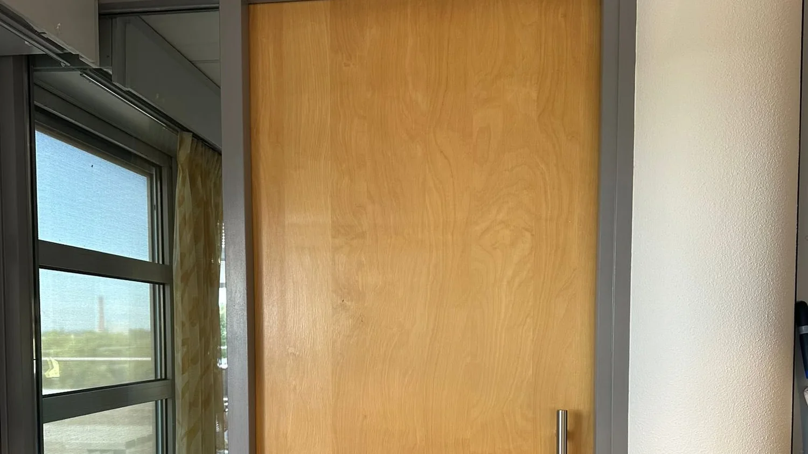

 Voor
Na
Voor
Na
Zevenaar · Arnhem · Duiven
Strak tot in de hoek waar niemand kijkt.
Binnen- en buitenschilderwerk, behang en kleine renovaties. 5,0 uit 31 reviews op Werkspot.
Vier richtingen
Waar denkt u aan?
De kleur is bijna altijd het langste gesprek. Klik op de richting die u het meest aanspreekt, dan leest u waar bij die keuze op gelet moet worden. Het gaat mee in de aanvraag, zodat het gesprek daar niet meer bij nul begint.
Schilderen, behangen, afwerken
Vier dingen, en die goed
Geen klusbedrijf met twintig diensten. Dit is waar Aribouw op wordt gebeld, en waar de reviews over gaan.
Binnenschilderwerk
Muren, plafonds, deuren, kozijnen en trappen. Strak afgeplakt, netjes achtergelaten.
Wat dat inhoudtBuitenschilderwerk
Kozijnen, deuren, boeidelen en buitenhout. Eerst het houtwerk herstellen, dan pas verf.
Wat dat inhoudtBehang en wandafwerking
Behangen, renovlies en glasvezel. Ook het oude behang eraf en de wand weer glad.
Wat dat inhoudtKleine renovaties
Plinten, kitwerk, houtherstel en de afwerking waar andere partijen niet aan toekomen.
Wat dat inhoudtUit Zevenaar en omgeving
Foto's van eigen klussen
Er staan er nog niet veel op. Wat er staat is eigen werk, geen ingekocht beeld.

Pui van een praktijkruimte
Voormalige garage, kozijnen en deur in antraciet

Binnendeur opnieuw gelakt
Van houtlook naar strak gebroken wit

Buitenkozijnen
Houtwerk hersteld, daarna gegrond en afgelakt
Vijf stappen
Het meeste werk zit in wat u later niet ziet
Schuren, plamuren en aftapen kosten de meeste uren. Precies daar zit het verschil tussen twee jaar mooi en tien jaar mooi.
U stuurt foto's of belt
Een paar foto's van de ruimte of het kozijn zeggen vaak al genoeg. Vermeld erbij wat u wilt en wanneer het ongeveer zou moeten.
Langskomen en opmeten
Er wordt gekeken naar de ondergrond, de staat van het hout en wat er aan voorwerk nodig is. Daar zit vaak meer werk in dan mensen denken.
Offerte met het voorwerk erin
Op papier staat wat er gebeurt: schuren, plamuren, gronden, aflakken. Zo is te zien waar de uren in gaan zitten en waarom.
Uitvoeren
Afdekken, afplakken, werken. U hoort vooraf wanneer er wordt begonnen en of u thuis moet zijn.
Opruimen en samen nalopen
Tape eraf, spullen terug, afvalmateriaal mee. Aan het eind wordt het werk samen doorgelopen.
5,0 uit 31
Wat klanten op Werkspot schrijven
Deze staan er letterlijk zo, met naam en datum erbij. Ze zijn openbaar na te lezen.
Verfwerk ziet er strak en netjes uit, heel tevreden. Komt afspraken na, erg vriendelijk. Rustig aan het werk, konden gewoon de deur uit.
Susanne, DrielBuitenschilderwerk, 5 sep 2026
Ahmad reageerde snel en dacht goed mee. Bleef wat langer om echt alles af te maken en kwam nog even terug voor de puntjes op de i.
Joke Tesink, ApeldoornBinnenschilderwerk, 7 aug 2026
Ahmad is een vakman. Komt afspraken na en werkt zeer netjes.
Cindy, WestervoortBuitenschilderwerk, 13 jun 2026
De deuren en kozijnen zijn prachtig hersteld en voorzien van een mooi kleurtje. Aan te raden.
Klant uit HuissenBuitenschilderwerk, 10 jul 2026
5,0 uit 31 reviews op Werkspot, stand 8 september 2026
Vijf van de negen
Waar mensen meestal over twijfelen
Dat hangt af van de oppervlakte, de staat van de ondergrond en hoeveel voorwerk er nodig is. Twee kamers van dezelfde maat kunnen een factor twee schelen, puur door wat eronder zit. Daarom komt er eerst iemand kijken en pas daarna een prijs.
Meubels worden afgedekt en vloeren beschermd. Tape gaat er aan het eind af, spullen gaan terug zoals ze stonden en het afvalmateriaal gaat mee. Op Werkspot is dat het punt dat het vaakst terugkomt in de reviews.
Dat verschilt te veel per klus om er hier een getal aan te hangen. Bij de offerte hoort een planning: wanneer er wordt begonnen, hoeveel dagen het ongeveer duurt en of u thuis moet zijn. Nog aanvullen: doorlooptijden
Dat hangt af van de ruimte en de ondergrond. In een badkamer of keuken is een andere lak nodig dan in een slaapkamer, en op een wand met scheurtjes werkt renovlies beter dan gewoon behang. U krijgt advies, en de keuze blijft aan u.
Dat mag, en het hoeft niet. Koopt u zelf, dan hoort u vooraf hoeveel er nodig is en welk type past. Wordt het meegenomen, dan staat het als post in de offerte.
Laat eerst even iemand kijken
Aan het langskomen en de offerte zitten geen kosten. Daarna weet u wat er nodig is en waar de uren in gaan zitten.
U wordt gebeld om een moment af te spreken. Stuur gerust alvast een paar foto's van de ruimte, dan kan er meteen worden meegedacht. In deze voorbeeldpagina gaat er nog niets echt de deur uit.
Liever meteen contact
Bellen of appen kan altijd. Een paar foto's van de ruimte zeggen vaak al genoeg om te weten waar het over gaat.
- Telefoon
- [TELEFOONNUMMER]
- [TELEFOONNUMMER]
- [E-MAILADRES]
- Werkgebied
- Zevenaar en omgeving
- Reviews
- 5,0 op Werkspot